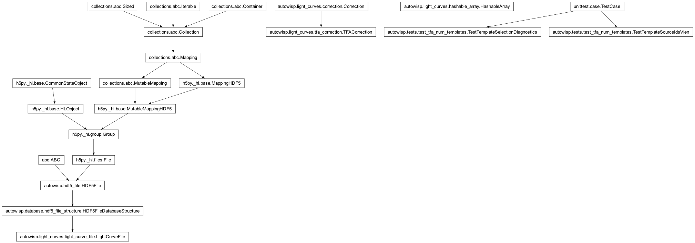
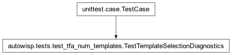
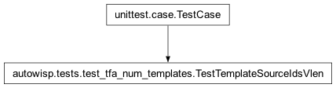

autowisp.tests.test_tfa_num_templates module
Class Inheritance Diagram

Unit tests for variable TFA template counts and selection diagnostics.
These are deliberately self-contained (no downloaded test-data bundle): the bundle cannot exercise a varying template count because every test channel happens to select the same number, so the ragged-storage regression and the short-count warning are covered here instead.
- class autowisp.tests.test_tfa_num_templates.TestTemplateSelectionDiagnostics(methodName='runTest')[source]
Bases:
TestCase
The short-count warning emitted by
_select_template_stars.- static _configuration(sqrt_num_templates)[source]
Config with cuts loose enough that every synthetic star passes.
- class autowisp.tests.test_tfa_num_templates.TestTemplateSourceIdsVlen(methodName='runTest')[source]
Bases:
TestCase
Ragged storage of the TFA
TemplateStarIDsconfig datasets.- test_dtype_override_is_vlen()[source]
get_dtypereports a vlen dtype (of the DB base) for the keys.
- test_varying_template_counts_round_trip()[source]
Appending configs of different template counts must not broadcast.
Reproduces the production crash (
Can't broadcast (1, 12) -> (1, 10)): one TFA run stores a width-10 row, a later run for the same source appends a width-12 row. With fixed-2D storage the append failed; as ragged rows it succeeds and round-trips.
- autowisp.tests.test_tfa_num_templates._TEMPLATE_KEYS = ('shapefit.tfa.cfg.template_source_ids', 'apphot.tfa.cfg.template_source_ids')
The two config datasets whose per-config value is a variable-length array of template star IDs.
- class autowisp.tests.test_tfa_num_templates._TemplateSelectionHarness(configuration)[source]
Bases:
TFACorrectionA
TFACorrectionexposing just the template-selection step.The full
TFACorrection.__init__reads per-light-curve template measurements and observation IDs (_prepare_template_data), which needs real data._select_template_starsonly consults the configuration and the (passed-in) EPD statistics, so this harness sets the configuration and skips the data-reading construction.